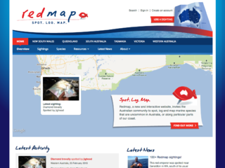
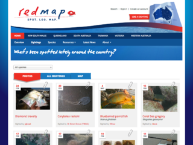

REDMAP WORKFLOW MANUAL v1
1. Public website features
1.1. Sightings
Redmap makes sightings public to encourage a community of interest.
Sightings are only displayed after review by an administrator or verification by an appropriate scientist.
1.1.1. Browsing sightings
-

We display the more recent sightings on the homepage.
The menu includes a tab to view more sightings.
-

The main sightings page shows recent photo sightings.
There are additional tabs to view all recent sightings and a map sightings
-

The latest sightings tab shows a table of all sightings, this includes those without photos.
-

The sightings map shows where sightings were made.
Clicking on the map will reveal a dialog about the sightings. Grouped sightings can be flicked through.


Note: All the sightings screens have an option to filter by species.
1.1.2. Viewing sightings
-

The sighting details screen includes a range of information about the sighting.
Related content includes other sightings in the area and other sightings of this species.
If a sighting has been reviewed and verified by a sighting it will be stamped 'verified'.
The website does not show the exact location of the sighting

1.2. Species of interest
Redmap is based around monitoring specific species of interest. The public website allows visitors to browse and find out about these species.
As with other public features, the full national list can be browsed or the user can use the regional tabs to filter by their region.
-
From the homepage the user can click to see the species of interest.
-
Species are grouped into categories.
-

Each species category includes a list of species of interest.
-

For each species there's a set of information about where it's known to inhabit along with related information.


1.3. Resources
The website includes resources which are grouped by topic.
-

We provide an index of all resource topics.
-

Resources are listed by topic
-

Each resource article is a page of information and related links.


1.4. Latest news
The website includes news articles posted either nationally or in regional pages depending on where it is relevant.

1.5. About content
Each region has an about section where various information is published.
The system has various templates allowing for special cases. These templates take into account regional filtering when they are displayed.
-

The standard page template includes a title, content and sidebar menu.
-

This template generates a list of all scientists.
-

The FAQ is based on a table of questions and answers in the database. This approach aims to avoid formatting errors when managing content.
-

A grid of all national partner and sponsors.


1.6. Regional pages
The website content can be filtered by choosing a region from the main navigation.
Within a region the following information can be accessed:
- Sightings made in the region
- Species of interest in the region
- Regional about information
- Regional news
- Regional partners and sponsors
- Scientists in the region

1.7. Newsletter
-
The homepage includes a signup form in the sidebar.
-

From the signup form you can pick regions of interest.
-

After submitting the form we thank the user.
-

An email is sent to the user thanking them for joining the newsletter.


Note: The current subscription process does not require double opt-in.
2. User accounts
2.1. Registration process
2.1.1. Standard account registration process
-

The user initially completes the registration form
-

We thank the user for signing up and ask them to look for an activation email.
-

An email is sent to the user with an activation link.
-

New users are invited to join the newsletter after activating.


2.1.2. Facebook based registration process
2.2. Updating profile details
-
After logging in the user has access to their profile via the My Redmap link in the header.
-

The user profile screen allows the user to update their details

2.3. Changing password

2.3. Password reset
-

From the login screen there is a forgotten password? link
-

The reset password form asks the the users email address
-

We thank the user and ask them to check their email for a password reset link.
-

The password reset email includes a link to choose a new password.
-

The user can then choose a new password.
-

Finally we confirm that the password has been changed.


3. Logging sightings
3.1. Logging a species of interest
Once a user is registered they are able to log sightings.
-
From all pages on the website there is a log a sighting button in the header.
-

On the first screen we ask the user to specify the species and upload a picture.
We encourage photo sightings but it's not required unless an non-listed species is being reported.
-

On the second screen we ask for details about where and when the sighting was made.
If possible we use information included with the photo to pre-populate the form data.
-

On the third screen we ask for more details about the sighting.
-

The user is asked to review their details before submitting.
-

The final screen confirms the sighting was saved.
-

We send the user an email telling them that we will review the sighting and to expect a response.


3.2. Logging other species
Logging an 'other species' is exactly the same process as shown in 3.1.
The requirements are slightly different in that we require a photo for these reports.
4. Verifying sightings
4.1. Roles and responsibilities
The system is designed around four main permission group:
- Users
- Scientists
- Regional managers
- Administrators
Users are assigned to the roles of scientist and regional managers. At the time of assignment they are associated with an organisation.
Scientists can be assigned to undertake verification of sightings. When giving the assignment settings are used to control when they may be given assignments.
- For a particular species
- In a specific region (optional)
- Only out of range sightings (optional)
- Ranking
4.2. Sighting assignment rules
4.2.1. Assigning species of interest
For each new sighting logged an algorithm picks who should be assigned the job of reviewing or verifying the sighting.
First, the sighting is inspected to identify three conditions:
- Does the sighting have a photo?
- Was the sighting made by a scientist?
- Is the sighting of a species of interest?
For photo sightings of species of interest reported by a non-scientist:
- Find scientists with matching allocation:
- Pick from active scientists allocations
- Exclude any scientists who previously were assigned this sighting
- Filter to those assigned to this species
- For 'in range' sightings filter out scientists who only accept 'out of range' sightings
- Look for regional matches.
- If no regional matches, look for national matches.
- Prefer lowest ranked match
- If multiple matches, pick the one with the least active assignments
If no matching scientist allocations are found we pick an active regional manager. Again we find the lowest ranked regional manager and then pick the least busy.
Our final fallback in all cases is to assign sightings to national administrator.
Special cases:
- In the case of a non-photo sighting we don't assign to a scientist.
- In the case of an 'other species' sighting we don't assign to a scientist.
- In the case of sightings logged by a scientist we don't assign to a scientist.
4.2.2. Assigning "other species" sightings
For other species sightings we assign a regional manager using the same considerations as described in 4.2.1.
4.3. Verifying a sighting
-

When a species is assigned for verification an email is sent.
The email includes some basic details, the photo and a link to initiate the verification process.
-

The first page of the verification process allows the scientist to update any details (such as the species identified) and formally record their assessment.
-

Based on the answers to question 1 the report form is populated with useful defaults.
This for affects how the sighting is used and additional comments are provided to the reporter and to the public.
-

An email is sent to the user with details of the assessment and any additional details provided by the scientist.
-
The user can click on a link in the email to see their sighting on the public website.


4.4. Reassigning a sighting
-
From the verify sightings wizard there is an option to reassign a sighting.
-

A different scientist can be picked and assigned the sighting with a comment.

An email is sent to advise the scientist that they have a new sighting to verify.
4.5. Escalating sighting to regional administrator
If a sighting has not been verified 7 days after being assigned to a scientist it is automatically reassigned to the regional administrator for follow up.
Typically the regional administrVator will reassign to a different scientist (using the procedure 4.4.)
4.6. Checking assigned sightings
All sightings must be reviewed before being publicly displayed. This is to ensure that no inappropriate photos or content is displayed.
While regional managers can't formally verify a sighting they can check and publish sightings. In this case the sighting is visible publicly but without a "verified" stamp.
This aims to avoid overloading scientists with the volume of sightings which are of no specific interest or are within known ranges.
5. Creating and updating website content
Regional managers can update various website content, including
- Pages
- News
- Resources
- Sitewide content
- Copy blocks
- FAQs
Associated with content are tags which allow filtering of content to be displayed by region, author or subject matter.
Content management permissions are quite open and require a mature attitude by regional managers.
5.1. Books and pages
Books are used to organise content pages with a menu.
These are primarily used to manage the about sections and also the resources menu.
-

The books are accessed via the admin panel.
-

Each book has a group of pages arranged into a heirarchy.
From this screen new pages can be added and pages can be reordered.
-

Each page has content and a title. Additional meta data can be included.
The template chosen affects how the content is presented.


5.2. News articles
News articles are displayed on the website.
We use the tags to control which regional sections should include the news.
-

All articles are listed with some key meta data including publication date and tags.
-

News articles are similar to pages but have some additional features including status, dates, thumbnail+caption and an option gallery of images.
As with pages, the template chosen affects how it is presented.


5.3. Resources
Resources are stand alone articles. They are presented on the website in topic based listings.
-

As with news, resources are listed with tags and other meta data.
-

The resource form works in a similar way to news.


5.4. Homepage copy
-

For the homepage, there is a specific set of content to manage.

5.5. Copy blocks
Copy blocks are used for special cases where template content needs to be manageable.
This is currently used for:
- Updating email content
- Updating miscellaneous template copy


5.6. FAQs
We manage the FAQ as a database table and generate the list using a template.


6. Administering the website
The website administrator has access to additional configuration options to maintain the website.
6.1. Managing members


6.2. Managing scientists
-

Managing scientist by promoting users.
-

-


6.3. Managing regional admins

6.4. Managing organisations


6.5. Managing region slugs
Each region has a tag associated with it. We use this tag to associate content with a region.
Typically this will only be needed when a new region is added.

6.6. Managing sponsors
6.6.1 Adding sponsors


6.6.2. Adding a sponsor category


6.7. Assigning scientists as species experts


6.8. Assigning regional administrators


6.9. Validation rules
The verification process includes support tools to which control how verified sightings are categorised and what templates are provided for responding publicly and to the user who reported.
6.9.1. Managing verification rules
-

-
Rules are matched if the conditions are met.
Rules have defined actions about whether a sighting is valid and what templates should be used to report.

6.9.2. Managing verification templates


6.9.3. Managing verification conditions
We've designed the system to be flexible and have additional conditions in the future. Changes to conditions affects verification rules.
Conditions are yes/no questions in general. We've made an exception for the photo question which required yes / no / maybe options.


{kind=link}
{kind=link}
{kind=link}
{kind=link}
{kind=link}